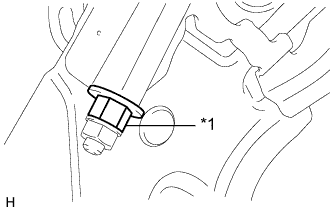

PARKING BRAKE PEDAL > INSTALLATION |
| 1. INSTALL PARKING PEDAL PAD |
Install the parking pedal pad.
| 2. INSTALL NO. 1 PARKING BRAKE CABLE ASSEMBLY |
Connect the No. 1 parking brake cable No. 3 clamp to the No. 1 parking brake cable.
Temporarily install the No. 1 parking brake cable assembly with the adjusting nut and lock nut.
Install the No. 1 parking brake cable assembly with the 4 nuts and 3 bolts.
Pass the No. 1 parking brake cable through the parking brake pedal.
Install the clip.
Bend the parking brake pedal claw.
Temporarily install the adjusting nut and lock nut to the No. 1 parking brake cable.
| 3. INSTALL PARKING BRAKE CONTROL PEDAL ASSEMBLY |
Install the parking brake control pedal assembly with the 3 nuts.
Connect the parking brake switch connector.
| 4. INSTALL TRANSMISSION FLOOR SHIFT ASSEMBLY |
Install the transmission floor shift assembly (Click here).
| 5. INSTALL CENTER AIRBAG SENSOR ASSEMBLY |
Turn the engine switch off.
Disconnect the cable from the negative (-) battery terminal.
| Condition | Waiting Time |
| Vehicle enrolled in G-BOOK system | 6 minutes |
| Vehicle not enrolled in G-BOOK system | 1 minute |
Install the airbag sensor with the 3 bolts.
Check that the airbag sensor is not loose.
Connect the connector.
| 6. INSTALL YAW RATE AND ACCELERATION SENSOR |
Attach the clamp to the hole of the sensor bracket.
Connect the connector.
Install the yaw rate and acceleration sensor with the 2 bolts.
| 7. INSTALL TURN SIGNAL FLASHER ASSEMBLY |
Install the turn signal flasher with the nut.
Connect the connector.
| 8. INSTALL REAR CONSOLE BOX ASSEMBLY |
Install the rear console box assembly (Click here).
| 9. INSTALL LOWER NO. 1 INSTRUMENT PANEL AIRBAG ASSEMBLY |
Install the lower No. 1 instrument panel airbag assembly (Click here).
| 10. ADJUST PARKING BRAKE SHOE CLEARANCE AND PARKING BRAKE PEDAL TRAVEL |
Remove the lower instrument panel finish panel sub-assembly (Click here).
Completely release the parking brake pedal.
 |
Loosen the lock nut and adjusting nut to completely release the parking brake cable.
Temporarily install the hub nuts to the hub bolts.
 |
Turn the shoe adjuster so that it expands until the disc locks.
 | Shoe Adjuster Contracts |
 | Shoe Adjuster Expands |
Turn the shoe adjuster so that it contracts until the disc can rotate smoothly.
Check that there is no brake drag against the shoe.
|  |
Turn the adjusting nut until the parking brake pedal travel is corrected to be within the specified range.
| *1 | Adjusting Nut |
Using a wrench or an equivalent tool, hold the adjusting nut and tighten the lock nut.
Operate the parking brake pedal 3 to 4 times and check the parking brake pedal travel.
Check that there is no brake drag against the shoe.
 |
Additionally, excessive pedal travel can be adjusted on the No. 1 parking brake cable as follows.
Loosen the No. 1 parking brake cable lock nut.
Turn the No. 1 parking brake cable adjustment nut until the parking brake pedal travel is correct.
Tighten the No. 1 parking brake cable lock nut.
Depress and release the parking brake pedal 3 or 4 times. Then check the number of clicks when depressing the pedal.
Remove the hub nuts from the hub bolts.
Install the lower instrument panel finish panel sub-assembly (Click here).
When operating the parking brake lever, check that the brake warning light comes on.
| 11. CONNECT CABLE TO NEGATIVE BATTERY TERMINAL |